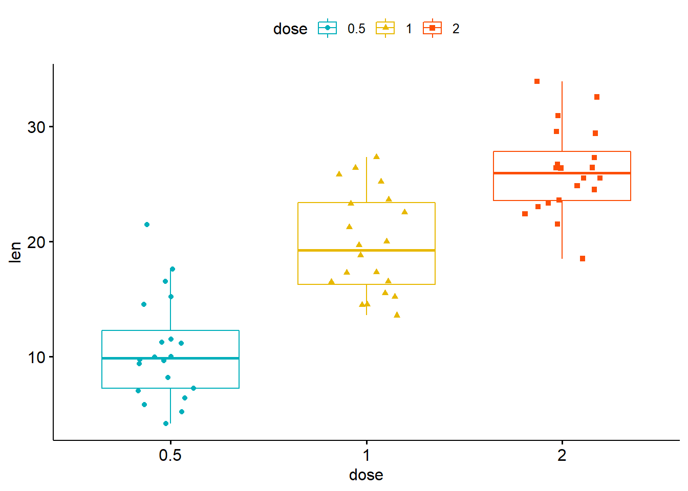
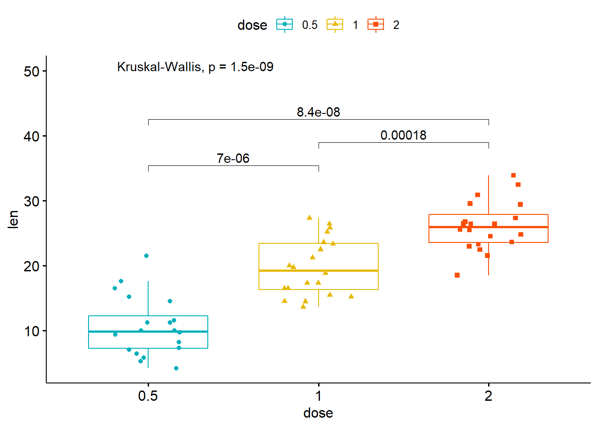

# install.packages("gganimate")
library(gapminder)
library(gganimate)
ggplot(gapminder, aes(gdpPercap, lifeExp, size = pop, colour = country)) +
geom_point(alpha = 0.7, show.legend = FALSE) +
scale_colour_manual(values = country_colors) +
scale_size(range = c(2, 12)) +
scale_x_log10() +
facet_wrap(~continent) +
# Here comes the gganimate specific bits
labs(title = 'Year: {frame_time}', x = 'GDP per capita', y = 'life expectancy') +
transition_time(year) +
ease_aes('linear')ggplot2 Extensions
The framework introduced by the ggplot2 package allows for extremely powerful and intricate plotting to be accomplished. ggplot2 also allows for extensions to be built, from a range of authors working in a range of scientific and data-driven fields.
Animations
Animations enabled through the {gganimate} package allow for animations to be create through the use of ggplot, without any additional.

Plotting Brains
Many domain-specific packages exist, such as {ggseg} for plotting brain segmentations.

Publication-Ready Plots
{ggpubr} is all about quickly getting to publication-ready plots with less hassle, with geom_* functions for adding significance values and other statistical components to your plots.
# install.packages('ggpubr')
library(ggpubr)
# Load data
data("ToothGrowth")
df <- ToothGrowth
head(df, 4) len supp dose
1 4.2 VC 0.5
2 11.5 VC 0.5
3 7.3 VC 0.5
4 5.8 VC 0.5# Box plots with jittered points
# :::::::::::::::::::::::::::::::::::::::::::::::::::
# Change outline colors by groups: dose
# Use custom color palette
# Add jitter points and change the shape by groups
p <- ggboxplot(df, x = "dose", y = "len",
color = "dose", palette =c("#00AFBB", "#E7B800", "#FC4E07"),
add = "jitter", shape = "dose")
p
# Add p-values comparing groups
# Specify the comparisons you want
my_comparisons <- list( c("0.5", "1"), c("1", "2"), c("0.5", "2") )
p + stat_compare_means(comparisons = my_comparisons)+ # Add pairwise comparisons p-value
stat_compare_means(label.y = 50) # Add global p-value
Other Packages
These packages and more can be found on the official ggplot2 extension website.